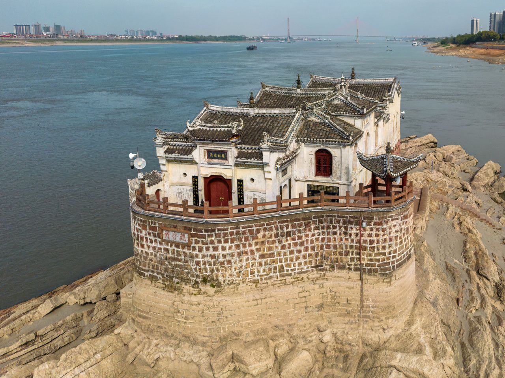

长江江心 · 龙蟠矶观音阁
市区小东门外 · 长江江心
走到江堤上抬头就能看见它：一座白墙黑瓦的阁子，孤零零立在江心的礁石上。本地人不叫它景点，叫「江里的庙」。
元至正五年（1345 年）始建，明清两代因为江水年年冲刷，修了又修，如今是全国重点文物保护单位。枯水期礁石整片露出来，可以走下去近看台基；汛期水漫上来，只剩飞檐，反倒更像一座漂在江上的房子。
我更喜欢傍晚去。江风大，船来船往，阁子不改颜色。
怎么去 市区步行或打车到观音阁公园
门票 江堤与公园免费
建议 枯水期看全貌，汛期看「水上阁」